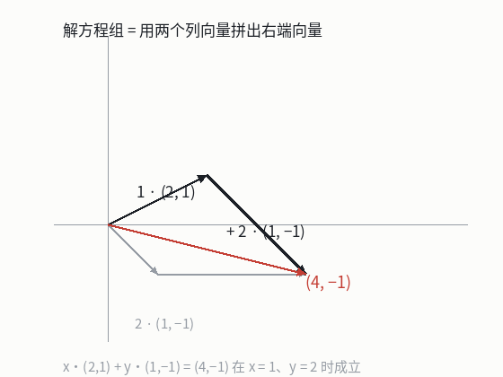

向量与线性组合
本节目标：能把方程组读成列向量的线性组合，并说清线性无关的几何含义。
一个推荐系统的难题
假设你在做电影推荐。每部电影有两个可量的属性：动作场面占比、情感戏占比，于是每部电影就是两个数组成的一对。用户看过的几部电影，能不能拼出一部他大概会喜欢的新片？
「拼」的意思是：把看过的电影各自乘上一个权重再相加。如果前两部是 (0.8, 0.2) 与 (0.2, 0.8)，各自乘 0.5 再相加，就得到 (0.5, 0.5)。这就叫线性组合：把若干向量各自乘一个数再相加。
「线性」来自拉丁文 linearis，本意是「属于线的」——17 世纪笛卡尔用它指两个量成比例。后来这个词被借去描述这类只有「数与和」的运算；「组合」是中文的意译，说的是把几样东西拼起来。整门线性代数只有两个基本动作：向量相加、向量乘一个数，后面的张成、矩阵、秩、特征值都是它们的推论。
从加法到线性组合
向量相加是逐分量相加：(1, 2) + (3, -1) = (4, 1)；向量乘一个数（叫标量）是逐分量乘： 2(1, 2) = (2, 4)。两者合起来就是线性组合：给 n 个向量 v_1, \dots, v_n 配上 n 个系数 c_1, \dots, c_n，
就是它们的一个线性组合。
系数可以取零、可以取负数，也可以取分数，这决定了组合能覆盖多大范围。所有可能的系数配出来的结果放在一起，构成这组向量的张成（span）。一个向量张成一条过原点的直线；两个不共线的向量张成整个平面；共线的两个向量张成的还是那条直线。
术语：线性无关
先有来历再给定义。18 世纪的数学家处理方程组时发现，有些方程是多余的：第三个方程能由前两个加减乘除凑出来，解集一点没变。他们把这个现象叫「相依」（dependent），反过来就叫「无关」（independent）。这个词后来被搬到向量上，因为方程组与向量组是同一件事的两面。
一组向量称为线性无关，如果它们的线性组合只有在系数全为零时才等于零向量：
只要存在一组不全为零的系数能让组合等于零向量，这组向量就叫线性相关。几何上，线性无关意味着每个向量都提供了别处拿不到的新方向：平面里两个不共线的向量线性无关，三个向量必然相关；三维空间里，三个不共面的向量才线性无关。
把方程组读成列向量
看这个方程组，先用中学的办法解一遍：2x + y = 4、x - y = -1。两式相加得 3x = 3，所以 x = 1；代回去得 y = 2。答案没错，但这个做法没有告诉你方程组长什么样。换一种读法：把每个未知量的系数收成一列，第一个未知量的系数是 (2, 1)，第二个是 (1, -1)，等号右边的常数是 (4, -1)。于是方程组等价于一个向量等式：
解方程组，就是找一组系数，让列向量的线性组合等于右端向量。代入验证： 1 \cdot (2, 1) + 2 \cdot (1, -1) = (2 + 2, 1 - 2) = (4, -1)，正好是右端项。

这个读法把三种情况一次说清：
| 解的情形 | 列向量的说法 | 几何图像 |
|---|---|---|
| 唯一解 | 拼法只有一种，两个列向量线性无关 | 两条不平行的直线交于一点 |
| 无穷多解 | 拼法不止一种，列向量线性相关 | 两个列向量共线，目标向量也在这条线上 |
| 无解 | 拼不出来 | 目标向量落在列向量张成的那条线之外 |
按行读是两条直线求交点；按列读是「用若干列拼出目标」——后者正是矩阵乘法的定义，也是最小二乘这类方法一开始的出发点。
矩阵：把列排起来
把上面两个列向量并排写成一个数表，就得到矩阵（matrix，拉丁文原意是「母体」，19 世纪西尔维斯特借它表示「数的出生地」）：
未知量写成向量 x = (x, y)，右端项写成 b = (4, -1)，方程组就浓缩成一行 Ax = b。矩阵乘法的定义是：Ax 是 A 的各列按 x 的分量加权拼出来的线性组合。按行读也能算——结果的第一行是「A 的第一行与 x 逐项相乘再相加」，也就是 2x + y；两种读法算出同一个数，但只有列读法能解释「为什么解方程组等于拼向量」。
前者是列向量的线性组合，结果的每个分量由整个向量决定；后者在 NumPy 里对应 A * v，它根本不是矩阵乘法。写代码时先确认自己用的是哪一个。
用 Python 算一遍
zip(*A) 把 [[2, 1], [1, -1]] 转置成两列，下面这段把两种读法都算一遍，用你已经在用的语法：
A = [[2, 1], [1, -1]]
x = [1, 2] # 待验证的系数
# 列视角：每一列乘上对应系数，再逐分量相加
result = [sum(c * k for c, k in zip(col, x)) for col in zip(*A)]
# 行视角：每一行与 x 做点积，结果应当相同
rows = [sum(a * k for a, k in zip(row, x)) for row in A]
print(result, rows == result) # [4, -1] True把上面那段存成 combine.py 跑一遍，然后做两件事：
- 把
x改成[2, -1]，先猜结果再跑，看猜得对不对； - 把
A换成第二列与第一列同向的矩阵，观察结果落在哪条直线上。
python3 -c "
A = [[2, 2], [1, 1]]
x = [1, 1]
print([sum(c * k for c, k in zip(col, x)) for col in zip(*A)])
"第 2 步的输出是 (4, 2)，它一定是 (2, 1) 的倍数：共线的两个列向量只能张成一条直线。
拿一个 3 元方程组，先判断它的列向量是否线性相关，猜它有几个解，再动手验证：
第二行是第一行的两倍：它提供的信息与前两列的组合重复。先自己算出结论，下一课用消元验证。
这一课的几何模型
整节课只有一个模型：解方程组 = 用 A 的列向量拼出 b。拼得出来就至少有一个解，拼法唯一就是唯一解，拼不出来就是无解。第 2 课把 A 从「一堆列」升级成「一个动作」，第 3 课给你一台机器，任何方程组丢进去都能立刻说出它属于哪一种。